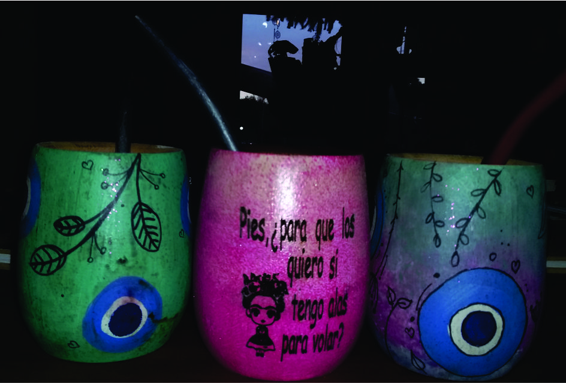
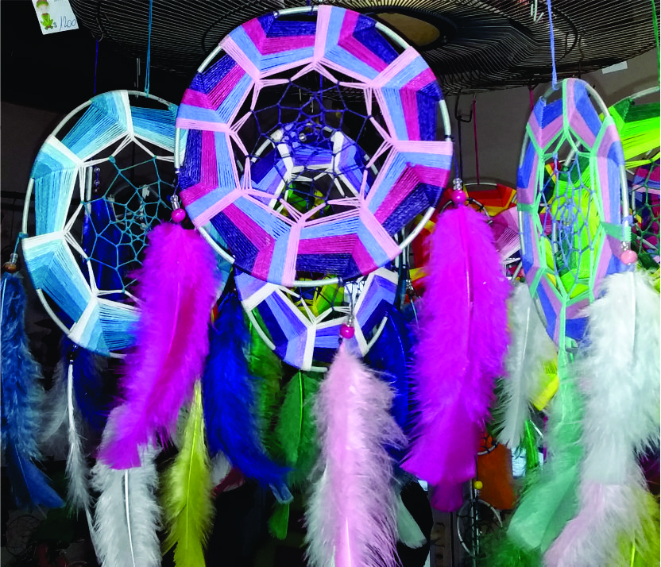
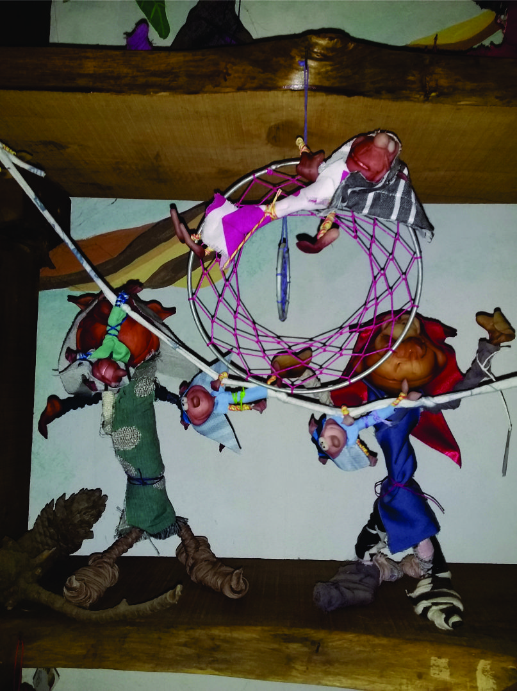
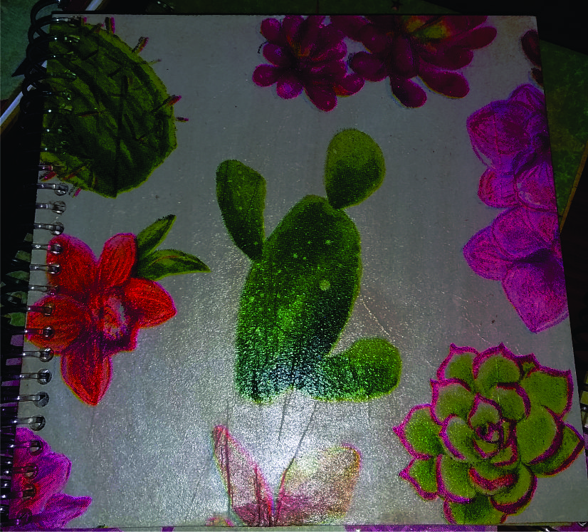

Productos

Mates
Mates de madera grabados, pintados, de calabaza con adorno de alpaca, porongos con adorno de alpaca. Virolas de alpaca

Atrapasueños
La leyenda establece que debe ponerse un atrapasueños sobre la cuna o cama de los niños para porteger sus sueños

Duendes
Los duendes son protetores de la naturaleza y el hogar. Al adoptarlo e integrarlo a nuestro ámbito, encontrará cual es la necesidad que sus habilidades permitan ayudae

Libretas
Libretas estilo blocs de notas con tapas de madera, grabadas, pintadas o con decoupage. Tienen 50 hojas interiores con una cabecera con frase inspiradora